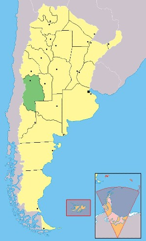
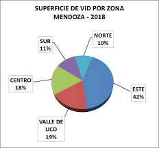

Mendoza the land of the good sun
The Province of Mendoza is located in the central west of the Argentine Republic, at the foot of Cerro Aconcagua, the highest peak in the Andes Mountains. Mendoza has been and is a Land of Opportunities.
Strategic location
Mendoza is located on the line of shortest distance between the oceanic coastlines that passes through the great southern capitals. A thousand kilometers separate it from Buenos Aires; four hundred from Santiago de Chile and three thousand two hundred from San Pablo.

Mendoza Urban Population
The City of Mendoza with its urban agglomeration, Greater Mendoza, is the fourth largest population unit in the country with almost 1,100,000 inhabitants and 848,660 inhabitants

Image Gallery

The Aconcagua is a mountain located in the province of Mendoza. It integrates the Cordillera Principal, which is a component of the Andes mountain range

The Puente del Inca natural monument is a protected natural area in the province of Mendoza in Argentina, declared a World Heritage Site by UNESCO

The Cristo Redentor tunnel, officially designated Los Libertadores International Pass, is an automotive border crossing that connects Argentina and Chile through the Andes mountain range, between the province of Mendoza, Argentina, and the Region of Valparaíso, Chile.

The city of Mendoza, International Wine Capital. Located at the foot of the highest mountains of the Andes. The climate is pleasant, temperate with little rain and very few windy days, thanks to the protection of the mountain range.

Valle Grande San Rafael for adventure tourism such as rafting